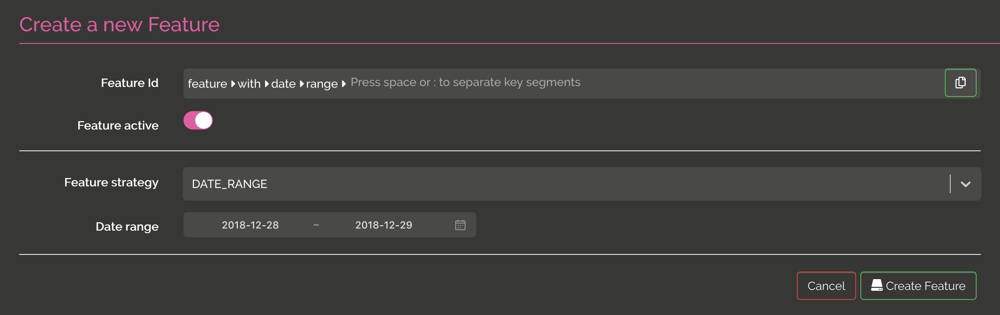

Feature flipping
One of the main feature of Izanami is feature flipping. Feature flipping allow you to activate or passivate a feature in real time.
The clients can check if a feature is active using the REST API.
When you create a feature, you have to select a strategy. You can choose between NO_STRATEGY, RELEASE_DATE, DATE_RANGE, PERCENTAGE, SCRIPT or GLOBAL_SCRIPT
NO_STRATEGY
this is the simpler one, the feature can be active or inactive

RELEASE_DATE
this kind of strategy allow you to enable a feature on a date value in addition to the active boolean.

DATE_RANGE
this kind of strategy allow you to enable a feature on a range of dates in addition to the active boolean.
HOUR_RANGE
this kind of strategy allow you to enable a feature on a range of hour for a day in addition to the active boolean.
PERCENTAGE
this kind of strategy allow you to enable a feature for a percentage of clients. In this strategy, the client need to send a context with an id field in order to calculate if the feature is enabled or not.

SCRIPT
this kind of strategy allow you to enable a feature using a script execution. On json context should be posted to evaluate if the feature is active or not.
In this example, the feature is active if the user sent in the context is ragnar.lodbrock@gmail.com :

You can go further following this link.
GLOBAL SCRIPT
Global script strategy is the same as script except that the script are shared between features.
You can find more details about global scripts on this page.
CUSTOMERS LIST
This kind of strategy allow you to enable a feature for set of customers. A use case can be to enable a feature for beta testers. In this strategy, the client need to send a context with an id field in order to check if the feature is enabled or not.